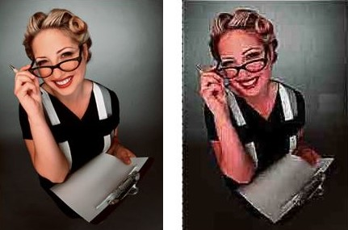
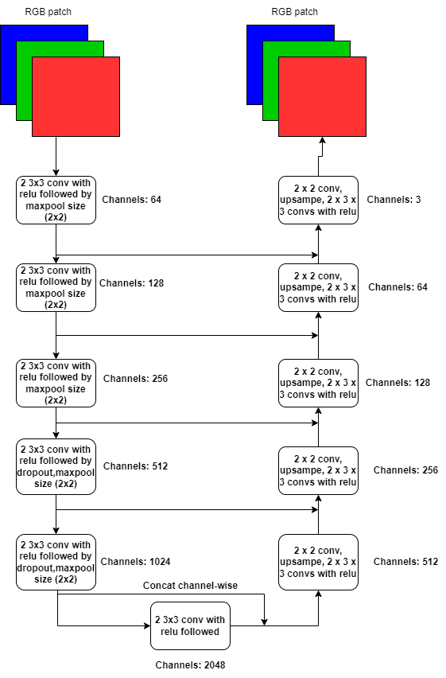
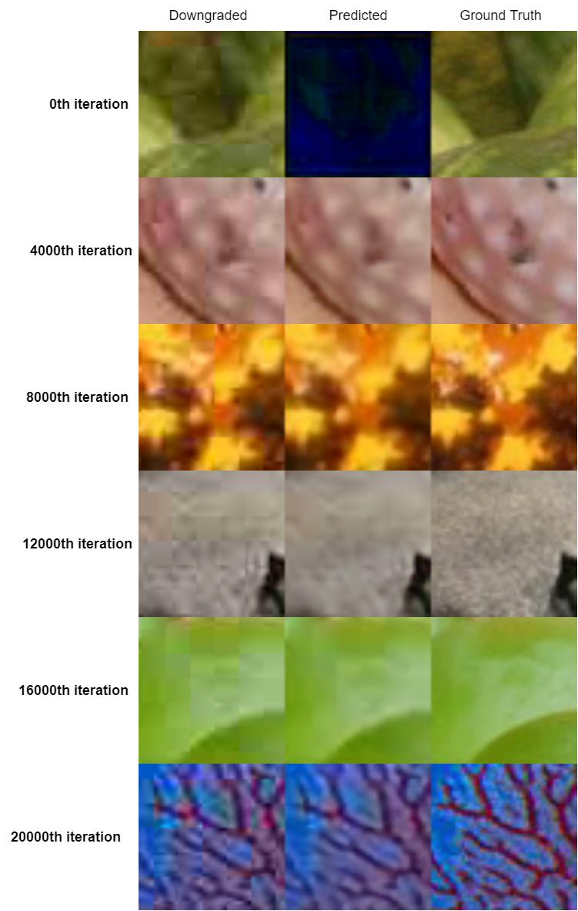
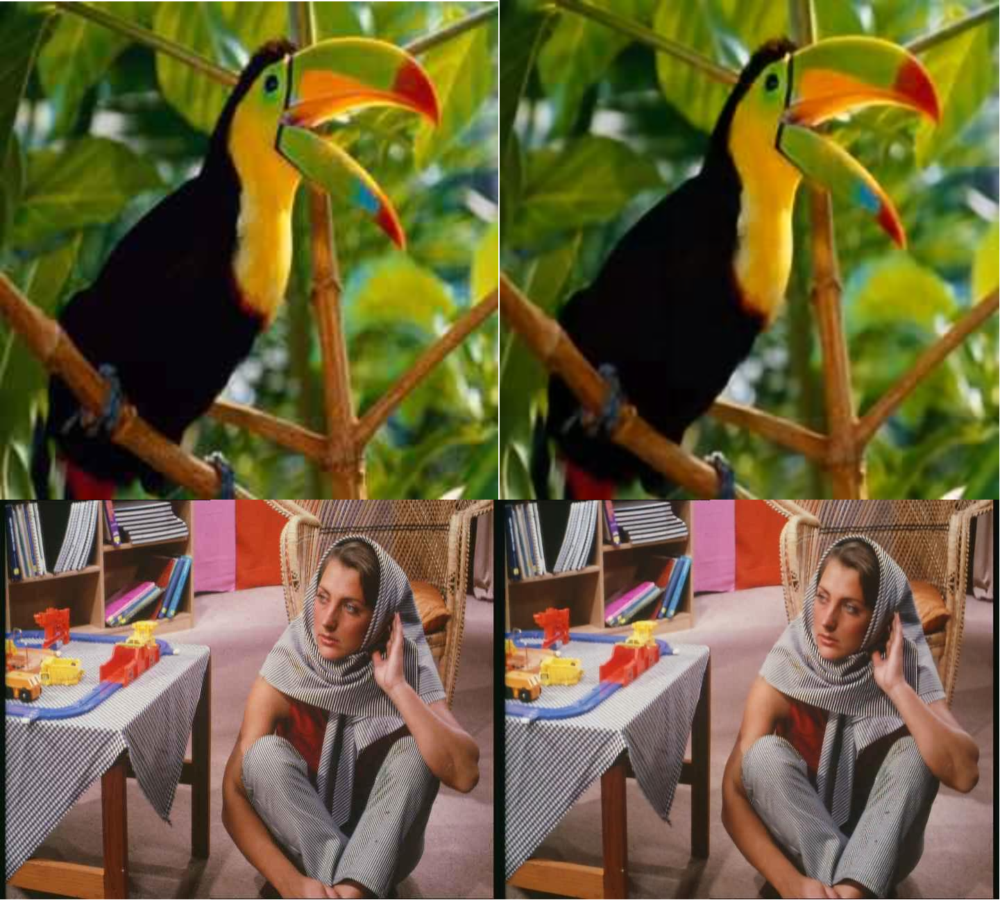

<!DOCTYPE html>
<html lang="en-US">
  <head>
    <meta charset="UTF-8">
    <meta http-equiv="X-UA-Compatible" content="IE=edge">
    <meta name="viewport" content="width=device-width, initial-scale=1">
    <title>Artifact Removal</title>
    <link rel="preconnect" href="https://fonts.gstatic.com" crossorigin="crossorigin"/>
    <link rel="preload" as="style" href="https://fonts.googleapis.com/css2?family=Poppins:wght@600&amp;family=Roboto:wght@300;400;500;700&amp;display=swap"/>
    <link rel="stylesheet" href="https://fonts.googleapis.com/css2?family=Poppins:wght@600&amp;family=Roboto:wght@300;400;500;700&amp;display=swap" media="print" onload="this.media='all'"/>
    <noscript>
      <link rel="stylesheet" href="https://fonts.googleapis.com/css2?family=Poppins:wght@600&amp;family=Roboto:wght@300;400;500;700&amp;display=swap"/>
    </noscript>
    <link href="../css/font-awesome/css/all.min.css?ver=1.2.1" rel="stylesheet">
    <link href="../css/mdb.min.css?ver=1.2.1" rel="stylesheet">
    <link href="../css/aos.css?ver=1.2.1" rel="stylesheet">
    <link href="../css/main.css?ver=1.2.1" rel="stylesheet">
    <noscript>
      <style type="text/css">
        [data-aos] {
            opacity: 1 !important;
            transform: translate(0) scale(1) !important;
        }
      </style>
    </noscript>
  </head>
</html>

<header class="d-print-none">
  <div class="container text-center text-lg-left">
    <div class="pt-4 clearfix">
      <div class="site-nav"> 
        <nav role="navigation">
          <ul class="nav justify-content-center">
            <li class="nav-item"><a class="nav-link" href="#theory" title="Theory"><span class="menu-title">Theory</span></a>
            </li>
            <li class="nav-item"><a class="nav-link" href="#archi" title="Architecture"><span class="menu-title">Architecture</span></a>
            </li>
            <li class="nav-item"><a class="nav-link" href="#train" title=""><span class="Training and Hyperparameters"> Training and Hyperparameters</span></a>
            </li>
            <li class="nav-item"><a class="nav-link" href="#exp" title=""><span class="Experiments"> Experimental Results </span></a>
            </li>
            <li class="nav-item"><a class="nav-link" href="#ref" title=""><span class="References"> References </span></a>
            </li>
          </ul>
        </nav>r
      </div>
    </div>
  </div>
</header>

<div class="page-content">
  <div class="container">
      <div class="shadow-1-strong bg-white my-5 p-5" id="theory">
        <div class="theory-section">
        <h2 class="h2 fw-light mb-4"> <u>a. Theory: </u></h2>
        <b>What are jpeg artifacts ?</b><br>
        When an image is saved in jpeg format, it losses some of its quality, the process of conversion to jpeg uses lossy compression method. To precise, the image losses
        color and sharpness, rendering crooked pixel structure through out the image. These pixels are called as jpeg artifcats. Refer the example given below:<br>
        <br>
        <br>
        <div style="text-align: center"> 
          <a href="https://www.modernpostcard.com/knowledge/preparing-materials/jpeg-compression"> Source:Jpeg Compression Article </a> 
        </div>
        
        These artifacts can be removed using a deep convolutional neural network architectures(CNN). The choice of CNNs justifies the fact that, these architectures do not need explicit 
        human intervention everytime, on top of that, they are easy to implement too. 
      
      </div>
    </div>

    <div class="shadow-1-strong bg-white my-5 p-5" id="archi">
      <div class="architecture-section">
      <h2 class="h2 fw-light mb-4"> <u>b. Architecture: </u></h2>    

      The proposed architecture for this problem is U-Net, because of it's nature of being fully convolutional with contracting and subsequent expansive layer strategy. A step by stpe explanation is given below:<br>
      
      1. The architecture starts with a two 3 x 3 convolutions, each followed by a <b>ReLU</b>, and then followed by a maxpool layer with a window size of 2 x 2. <br>
      2. There are five such layers with increasing number of channels by a factor of two, starting with 64 channels for first layer. The last layer do not have a maxpool layer. All these layers are part of contraction layers.<br>
      3. Then starts the expansive layers, that have one 2 x 2 convolution layer that halves the number of channels, followed by upsampling by factor of 2, then followed by two 3 x 3 convolution layers with a ReLU.<br>
      4. But in this implemetation, an extra downsampling and upsampling layer was added, this helped in improving the output of rgb image. This whole architecture is imagined in a U-shape, hence the name U-NET<br><br>
      <br>
      5. The concatenatation of layers is done to improve model's understanding of context information. 
      The original model used convolutions without padding and applies the concept of input mirroring to infer borders of the image, 
      here, since the model is designed in such a way to directly output for rgb channels, 
      the convolutions output feature maps of same size.<br>

  </div> 
</div>

<div class="shadow-1-strong bg-white my-5 p-5" id="train">
  <div class="training-section">
  <h2 class="h2 fw-light mb-4"> <u>c. Training and Hyperparameters: </u></h2>
  
  1. The model was trained on 48 x 48 image patches randomly taken from training dataset. Training on patches doubles the size of the dataset. The U-Net model used for segmentation provides patch-wise context to the model, but here for a problem like artifact removal, there was bit skepticism with usage of context, hence didn't use it here, though it might be used in future projects.<br>
  2. <b>L1 loss</b> was used to compare predicted and ground truth image. <br>
  3. <b>Adam optimizer</b> is applied as gradient backpropogation policy with <b>exponential decay rate</b>, that maintains a minimun learning rate of <b>0.0001</b> units.<br>
  4. <b>Jpeg quality of 20</b> was induced into every 48 x 48 input patch image. 
</div>
</div>

<div class="shadow-1-strong bg-white my-5 p-5" id="exp">
  <div class="experiment-section">
  <h2 class="h2 fw-light mb-4"> <u>d. Experimental Results: </u></h2>

  The final L1Loss was around 0.02 units. The model was trained for 20,000 iterations, output at every 4000th iteration are given below:<br>
  <br>
  <br><br>

  <b>Some examples of images:</b><br>
  <br><br>

* Though the model smooths the input image as shown above, it introduces some amount of blur in the image. More research is needed on this topic.<br>
* Code for the application is available <a href="https://github.com/hungryGeek16/unet_artifact_removal"> here </a><br>
</div>
</div>


<div class="shadow-1-strong bg-white my-5 p-5" id="train">
  <div class="training-section">
  <h2 class="h2 fw-light mb-4"> <u>e. References </u></h2>

1. U-NET: <a href="https://arxiv.org/abs/1505.04597v1"> paper </a> <br>
2. BlockCNN: <a href="https://openaccess.thecvf.com/content_cvpr_2018_workshops/papers/w50/Maleki_BlockCNN_A_Deep_CVPR_2018_paper.pdf"> paper </a><br>
3. SNET-Tf2: <a href="https://github.com/ppooiiuuyh/SNET-Tf2/blob/master/models/model_SNET.py"> code reference </a><br>